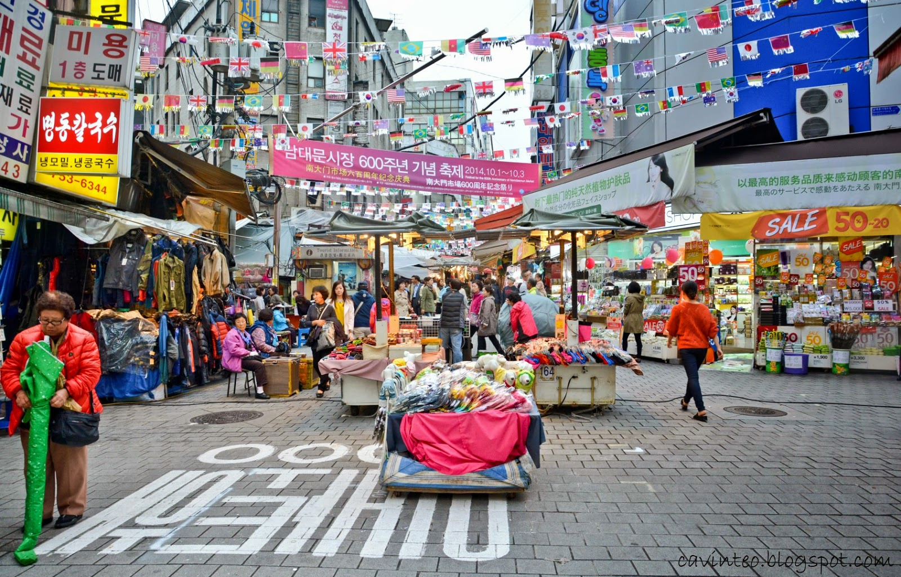
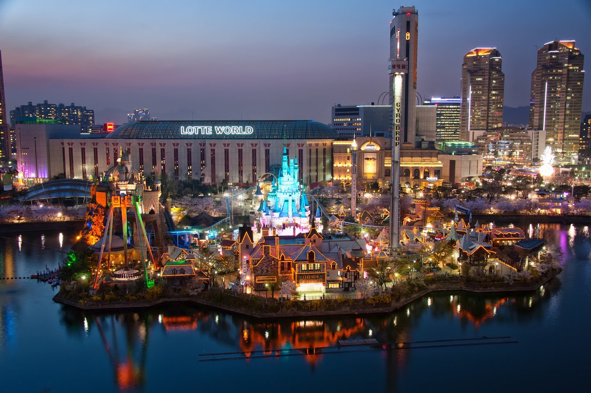

Bukchon Hanok Village
Bukchon Hanok Village is a Korean traditional village in Seoul with a long history located between Gyeongbok Palace, Changdeok Palace and Jongmyo Royal Shrine.

Namdaemun Market
Namdaemun Market is a large traditional market in Seoul, South Korea. The market is located next to Namdaemun, the "Great South Gate," which was the main southern gate to the old city. It is the oldest and largest market in Korea.

Lotte World
Lotte World is a major recreation complex in Seoul, South Korea. It consists of the world's largest indoor theme park, an outdoor amusement park called "Magic Island", an artificial island inside a lake linked by monorail, shopping malls, a luxury hotel, a Korean folk museum, sports facilities, and movie theaters. Opened on July 12, 1989, Lotte World receives 7.3 million visitors each year.